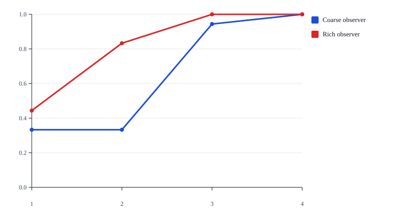
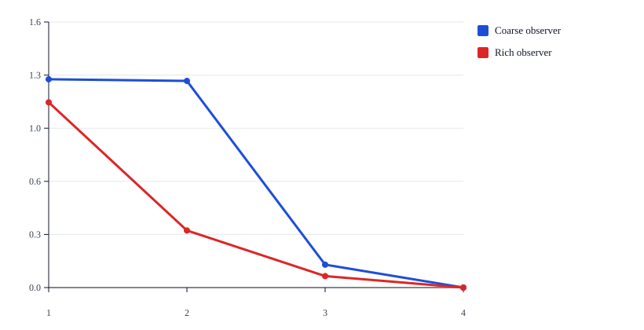
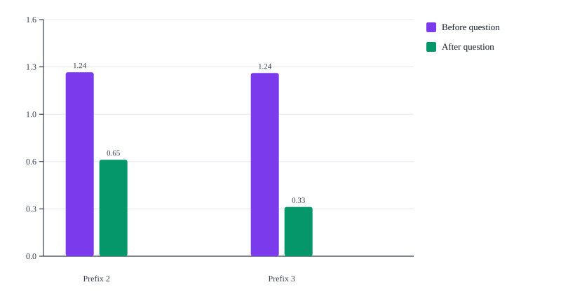
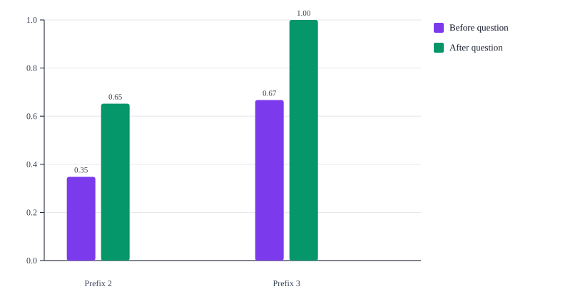
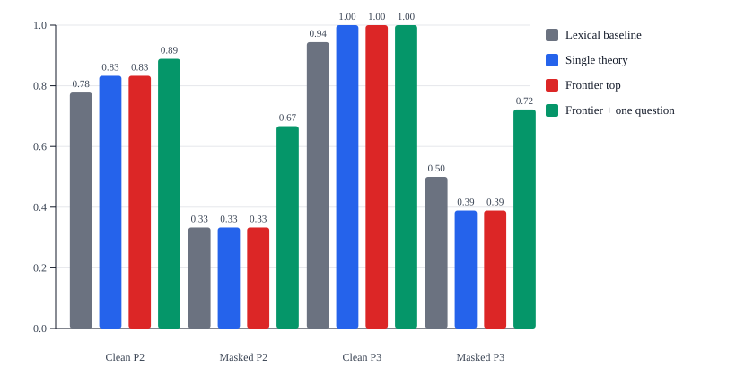
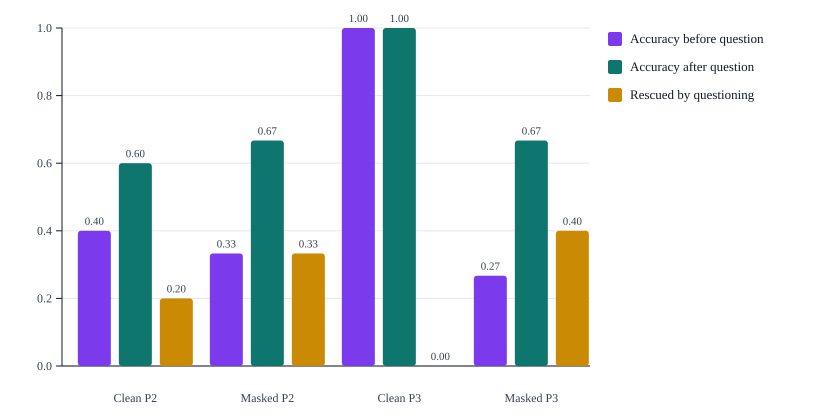

A Meta-Rational Neuro-Symbolic Architecture for Ruliologic Exploration
This article studies three concrete validation modes for a meta-rational neuro-symbolic architecture. The first asks whether richer observers narrow the plausible frontier earlier while preserving structured alternatives that still deserve retention. The second asks whether discriminating questions reduce uncertainty and improve the ranking of local theories once ambiguous prefixes have already been lifted into explicit observations. The third asks whether the retained frontier remains useful when the strongest domain cues are masked and early collapse policies become fragile. The resulting evidence supports a practical conclusion: a theory-guided pipeline can preserve plural structure during early induction, recover from masked or delayed cues through explicit questioning, and remain auditable throughout the update loop. Ruliology provides the orientation toward rule spaces, applied category theory provides disciplined composition and translation, and neuro-symbolic AI provides typed and compositional conceptual carriers for the retained frontier.
1. Problem and research objective
Three ingredients
Ruliology studies what abstract rules do and how spaces of possible rules are organized [WOLFRAM-2026].
Applied category theory studies disciplined composition and structure-preserving translation across domains [FONG-SPIVAK-2019].
Recent neuro-symbolic work argues for concept-centric systems in which objects, relations, and actions remain typed and compositional even when learned components are involved [MAO-2025].
The methodological gap
These three directions become genuinely compatible only if one basic distinction is preserved. When the input is natural-language text, the system does not observe a phenomenon directly. It observes a description of an observation, and in some cases it observes a description of a theory about that phenomenon. A direct passage from text to final theory is therefore methodologically unsound because it conflates what was said, what may have been observed, and what is being inferred.
Research objective
The objective of the proposed architecture is not to infer one privileged theory from text. The objective is to construct, under explicit uncertainty, a bounded local region of theory space around the available evidence. The system should first lift text into structured observational hypotheses. It should then induce several candidate local theories compatible with those hypotheses. It should finally organize those theories into a local neighborhood with explicit relations of refinement, coarsening, refactorization, and observer-relative equivalence.
The result is not a single ontology that pretends to settle the matter too early. The result is a managed family of plausible local theories together with robust consequences and theory-sensitive consequences. That is the sense in which the framework is ruliological in practice: it studies nearby rule-bearing possibilities instead of collapsing them immediately into one final descriptive winner.
Meta-rational stance
This architecture is meta-rational in a precise and operational sense. Early abstractions are not treated as final merely because they are available. Several candidates remain active for as long as the evidence, the task, or the cost model does not justify stronger commitment. Meta-rationality here is therefore not vagueness. It is disciplined non-reification backed by explicit retention rules, explicit score profiles, and explicit neighborhood structure.
Reference implementation
The rest of the article develops this thesis in concrete form. It explains the four-stage neuro-symbolic pipeline, the formal objects and update rules that make the frontier auditable, and the controlled experiments that test the current structural claims. autoResearchLib appears in that discussion as the reference implementation and as the location of the reproducible experiments, not as the paper's main subject.
2. Neuro-symbolic pipeline
The architecture is organized around staged commitment. Structured evidence is not forced immediately into one final ontology. Instead, the system passes through four stages that progressively change what kind of object is being manipulated and what kind of commitment is justified at that point.
Figure 1 summarizes this pipeline. The labels inside the boxes are intentionally brief. Their job is to identify the stage, while the surrounding prose explains the epistemic work performed inside each one.

Stage 1. Observational lifting
Observational lifting converts a report into several candidate observational hypotheses. This stage is naturally neuro-symbolic because natural language contains ellipsis, presupposition, lexical variation, coreference, and underdetermined event structure. A learned component may therefore help propose candidate event or relation structures, but those proposals must be converted into explicit typed and compositional neuro-symbolic concept records with provenance and uncertainty annotations before they can influence theory induction [MAO-2025].
The output of observational lifting is not a theory. It is a structured hypothesis about what may have been observed or asserted. This is the first safeguard against methodological collapse.
Stage 2. Local theory induction
For each observational hypothesis, the system induces one or more candidate local theories. A local theory proposes a typed state schema, a family of rewrite templates, a set of invariants, and a discipline of admissible composition. This is the point where the symbolic side of the architecture dominates. Categorical rewriting is treated as typed local transformation rather than as an unstructured state diff, which is why compatibility and composition become first-class concerns [DUVAL-2011].
Stage 3. Local rulial exploration
Theories induced from the same observation are not treated as isolated outputs. They are organized into a local neighborhood through refinement, coarsening, refactorization, and observer shift. This stage separates robust consequences from theory-sensitive consequences and maintains a bounded frontier of theories that remain worth retaining. That neighborhood perspective is what makes the framework ruliological in an operational sense: it treats nearby spaces of possible rules as objects of study instead of rushing toward a single prematurely reified interpretation [WOLFRAM-2026].
Stage 4. Alignment and lexicalization
Only after a retained neighborhood exists does alignment become appropriate. At that point the system may compare a local theory with an external ontology, a domain model, or a previously learned concept library. Applied category theory matters here because the problem is not merely one of naming. It is a problem of category-level disciplined translation between structured regimes and of preserving meaningful relations under that translation [FONG-SPIVAK-2019].
Table 1 summarizes the epistemic role of the four stages.
| Stage | Input | Output | Why this stage stays separate |
|---|---|---|---|
| Observational lifting | Report text or other structured evidence | Several observational hypotheses | It keeps report and theory distinct. |
| Local theory induction | One observational hypothesis | Several candidate local theories | It keeps typed schemas, rewrites, and invariants explicit. |
| Local rulial exploration | Candidate theories plus observer/query family | Local theory neighborhood and retained frontier | It preserves plural local structure under bounded commitment. |
| Alignment and lexicalization | Retained neighborhood | Aligned conceptual descriptions | It delays naming until symbolic structure already exists. |
In the reference implementation, learned assistance is confined to bounded lifting-friendly normalization before observational lifting and to late conceptual articulation after the frontier has already been retained. The retained frontier, the score profile, and the experiment metrics remain authoritative products of the symbolic core.
The same staged discipline appears at the public usage surface. A host application supplies source text or segmented evidence together with source metadata, an observer profile, and explicit budgets. The system returns a bounded frontier bundle whose canonical projection still distinguishes source context, observations, local theories, transforms, equivalence classes, consequences, questions, and updates. This matters because the architecture is intended to be used as an auditable theory-frontier engine, not as a hidden text-to-label shortcut.
3. Formal model and frontier management
The framework revolves around four explicit objects. O(x) = {O0, O1, ..., On} stores observational hypotheses derived from a report. T = (Sigma, I, R, C, S) stores a local theory with a state schema, invariants, rewrite templates, a compositional discipline, and a decomposed score profile. N(Oi) = (Ti, Mi, Ei, Qi) stores the local neighborhood retained for one observational hypothesis. F stores the active frontier of theories that remain worth retaining under the current evidence and budget. The point of these objects is practical: every transition from text to theory remains inspectable.
The observation layer is already operational rather than metaphorical. Each observational hypothesis stores explicit cues, inferred cues, source spans, a domain-support map, and a bounded focus policy. In the current implementation the support for a domain is 0.3 * genericSignal + explicitSignal + 0.7 * inferredSignal. The base hypothesis keeps all cues, while focused hypotheses keep generic cues plus the cues of domains that remain close enough to the best current support. This is why the architecture can preserve several structured observation candidates without pretending that the earliest prefix already determines the case uniquely.
The same objects are also exposed through a canonical CNL projection. Source context, observations, hypotheses, theories, transforms, equivalence classes, consequences, questions, and updates are serialized as deterministic keyword-led lines so the library, the experiments, and the article all refer to the same operational state rather than to three different descriptive layers. The CNL is therefore a stable audit surface for the model, not a second theory beside it.
The local theory is equally explicit. For each retained hypothesis and each domain family, the system materializes a state schema, invariant set, rewrite family, composition discipline, and a six-part score profile. The named dimensions are evidenceCoverage, predictiveAdequacy, compressionUtility, compositionalSharpness, stability, and alignmentUtility. The current scalar total is 0.22 * evidenceCoverage + 0.28 * predictiveAdequacy + 0.10 * compressionUtility + 0.16 * compositionalSharpness + 0.14 * stability + 0.10 * alignmentUtility. The total matters for ranking and entropy, but it does not replace the named dimensions because different theories remain useful for different reasons.
Table 2 summarizes the score dimensions used in the current framework.
| Score dimension | Meaning in the current implementation | Weight in total |
|---|---|---|
| Evidence coverage | Fraction of the available observational signal explained by the theory | 0.22 |
| Predictive adequacy | Compatibility of the theory with the matched local state evolution | 0.28 |
| Compression utility | Structured summary value without gratuitous local complexity | 0.10 |
| Compositional sharpness | Clarity of typed rewrites and admissible compositions | 0.16 |
| Stability | Resistance to perturbation and later evidence updates | 0.14 |
| Alignment utility | Utility for later conceptual articulation and comparison | 0.10 |
Figure 2 depicts the neighborhood in abstract form. The figure is intentionally generic so that the chapter explains the geometry of the method rather than one domain-specific example. What matters is that the neighborhood contains more than a list of competing theories. It also contains the transformation family Mi and the observer-relative equivalence classes Ei, so categorical local rewriting and structural compatibility remain explicit [DUVAL-2011]. The consequence profile Qi then separates robust consequences from theory-sensitive ones across the retained frontier.

The frontier rule is the point where meta-rationality becomes operational. A theory survives the strict frontier only if no other theory is at least as good on every named score dimension and strictly better on at least one of them. The current implementation then applies one rescue rule: if a whole domain would disappear from the strict frontier, but its best surviving theory is still within a small total-score tolerance of the best frontier score, that best theory is reintroduced. The resulting frontier remains bounded, yet it does not erase still-plausible local families merely because one nearby candidate currently ranks first.
Worked example
Consider the generic prefix: "The item was logged and placed in the staging area. A label was attached and the record was updated." At this point the rich observer sees generic workflow cues but no decisive package, sample, or manuscript marker. The induced frontier therefore keeps package, manuscript, and sample theories alive, even though the package family currently ranks first. This is the intended behavior: the frontier records that the text is still compatible with several local explanations.
The best next question asks for dispatch evidence because that cue would separate package-like theories from the other two families. If the observed answer is "no", the update does not restart the analysis from scratch. It applies a local frontier revision: package-oriented theories lose predictive adequacy and stability, the package family drops out, and the frontier contracts to a smaller manuscript/sample region. The point of the example is not that one question must finish induction. The point is that uncertainty is reduced by an explicit, typed intervention on a retained neighborhood.
Core algorithms
The operational loop is intentionally split into three algorithms because the framework treats extraction, neighborhood construction, and evidence revision as different epistemic acts. The first step lifts a report into auditable observations. The second step expands those observations into a local theory neighborhood with explicit scores, transformations, and equivalence classes. The third step revises that neighborhood when new evidence arrives. Keeping these stages separate makes it possible to inspect where uncertainty is introduced, where it is reduced, and where it is intentionally retained.
OBSERVATIONAL_LIFT is the gate from report space into structured evidence. Its role is not to force one premature interpretation, but to preserve several bounded observational candidates together with provenance and inference strength. That is why the output is O(x) rather than a single canonical graph: later stages need to know which distinctions were explicit in the text and which were only inferred under current observer assumptions.
OBSERVATIONAL_LIFT(x, B)
Input:
x = natural-language report
B = resource budget
Output:
O = {O0, ..., On} observational hypotheses
1. Normalize the report and extract explicit typed cues.
2. Infer additional cues through local cue-completion rules.
3. Compute domain-support values from generic, explicit, and inferred signal.
4. Build the base hypothesis O0 with full provenance and cue typing.
5. Build focused hypotheses for the domains that remain within the budgeted support band.
6. Return the bounded family O.In practice this means the lift stage already constrains later theory search. A theory can only claim support from evidence that has a traceable observational path, and hypothetical or inferred elements remain marked instead of masquerading as observed fact. The bounded family keeps the process finite without pretending that early evidence uniquely determines the case.
LOCAL_RULIAL_EXPLORATION starts from each retained observational hypothesis and asks which local theories remain structurally compatible with it. This is the point where the framework stops behaving like a labeler and starts behaving like a neighborhood explorer. Refinement, coarsening, and refactorization generate nearby alternatives, while the decomposed score profile explains why some alternatives remain useful even when they are not top-ranked on every dimension.
LOCAL_RULIAL_EXPLORATION(O, Q, B)
Input:
O = observational hypotheses
Q = observer/query family
B = resource budget
Output:
N = family of local rulial neighborhoods
1. For each observational hypothesis Oi:
2. Induce one base theory for each active domain family.
3. Generate nearby theories by refinement, coarsening, and refactorization.
4. Score every theory on the six named dimensions and compute its total.
5. Build observer-relative equivalence classes from visible cues and visible states.
6. Compute robust consequences and theory-sensitive consequences.
7. Retain a bounded frontier using non-domination plus domain rescue.
8. Return N.The crucial point is that equivalence classes and frontier rescue are not cosmetic additions. Equivalence classes prevent the frontier from being cluttered with theories that differ internally but answer the current questions in the same way. Rescue prevents the strict Pareto rule from erasing an entire family when it is still close enough to remain explanatory under the current evidence.
RULIAL_NEIGHBORHOOD_UPDATE governs what happens after the system receives a new answer, a new observation, or a later workflow prefix. The update is not a complete restart. It is a controlled revision of the already retained neighborhood: the best discriminating question is chosen by information gain, answer-dependent score deltas are applied, the frontier is re-summarized, and the new neighborhood can explain exactly why a family was refined, rescued, or removed.
RULIAL_NEIGHBORHOOD_UPDATE(N_t, DeltaE, Q, B)
Input:
N_t = current local neighborhoods
DeltaE = new evidence or answered question
Q = observer/query family
B = resource budget
Output:
N_t+1 = updated neighborhoods
1. Select the highest-information-gain question over the current frontier when a question is available.
2. Apply answer-dependent score deltas to the retained theories.
3. Recompute the frontier under non-domination and domain rescue.
4. Rebuild equivalence classes and robust/theory-sensitive consequences.
5. Update theory and domain entropies.
6. Return N_t+1.This distinction matters for engineering use. A restart-based pipeline can tell the user only that the answer changed. An update-based frontier can show which part of the neighborhood became untenable, which distinctions collapsed into equivalence, and which theory became newly dominant because a previously missing cue was supplied. The frontier is therefore not only a data structure. It is the operational form of epistemic restraint inside the framework.
4. Experimental validation
The current repository validates three structural claims of the broader framework rather than the whole theory at once. The first claim is representational: richer observation should sharpen the retained frontier earlier than coarse observation. The second claim is managerial: when several local theories remain plausible, the system should be able to ask a useful next question and update the frontier transparently. The third claim is recoverability under weak evidence: when strong cues are masked, preserving a frontier should still be more useful than collapsing immediately to a single early answer.
All three experiments exercise the same public evidence-analysis and evidence-update contract that the library exposes to downstream users. Each run records canonical run metadata and CNL-family coverage alongside the ordinary quantitative outputs, so the experiments validate the intended usage surface of the library rather than only repository-internal helper calls.
Experiment 1. Observer richness and frontier shape
Experiment 1 uses 18 controlled workflow cases distributed across package handling, laboratory sample handling, and manuscript processing. Each case is exposed through four textual prefixes, and each prefix is analyzed twice: once with a coarse observer and once with a richer observer. The input to each run is therefore a prefix string plus an observer family, while the output is a full retained frontier summary: ranked domain distribution, frontier entropy, equivalence compression, question availability, and top-domain accuracy. In other words, the experiment records not only which family is ranked first, but also how much structured ambiguity remains and whether further questioning is still needed.
Table 3 summarizes the aggregate observer-comparison results. The clearest separation appears at Prefix 2: the rich observer raises mean top-domain accuracy from 0.333 to 0.833 while reducing mean frontier entropy from 1.245 to 0.344. At Prefix 1 both observers are still mostly generic; by Prefix 3 the rich observer reaches 1 accuracy and the coarse observer catches up to 0.944 once stronger procedural evidence arrives.
| Prefix | Observer | Cases | Accuracy | Entropy | Equivalence compression | Question availability |
|---|---|---|---|---|---|---|
| 1 | coarse | 18 | 0.333 | 1.255 | 6 | 1 |
| 1 | rich | 18 | 0.444 | 1.116 | 5.778 | 0.889 |
| 2 | coarse | 18 | 0.333 | 1.245 | 4.167 | 1 |
| 2 | rich | 18 | 0.833 | 0.344 | 3.722 | 0.278 |
| 3 | coarse | 18 | 0.944 | 0.138 | 3.889 | 0.111 |
| 3 | rich | 18 | 1 | 0.069 | 3.944 | 0.056 |
| 4 | coarse | 18 | 1 | 0 | 4 | 0 |
| 4 | rich | 18 | 1 | 0 | 3.722 | 0 |
Figure 3 isolates the accuracy trajectory. At Prefix 1 both observers remain limited because only macro-structural workflow language is visible. At Prefix 2 the rich observer starts separating the cases where typed domain markers are already present, while the coarse observer still sees a broad package-like explanation. By Prefix 3 most cases are resolved, but the rich observer reaches the correct top-ranked domain earlier and more consistently.

Figure 4 complements the accuracy chart with the quantity that matters more for this paper: frontier entropy. A system may improve its top-ranked answer without making the retained neighborhood substantially more disciplined. Here the entropy drop shows that the richer observer is not only guessing better; it is retaining a smaller and sharper set of plausible local theories once typed cues appear.

The observer-richness result should be read carefully. It does not show magical understanding. Generic sample and manuscript prefixes can still remain ambiguous when the decisive cue has not yet appeared. What the experiment demonstrates is that once the relevant cue does appear, a richer observer converts it into earlier frontier contraction and lower question demand. That is the practical value of observational lifting in the current deterministic implementation.
Experiment 2. Discriminating questions and frontier update
Experiment 2 keeps the ambiguous traces that survive the initial analysis. For each such trace, the system receives the current frontier, selects the question with the highest expected information gain, applies the gold answer from the case metadata, and recomputes the frontier. The emitted outputs include the before/after domain distribution, entropy before and after questioning, accuracy before and after questioning, the selected question text, the probed cue, the resulting information gain, and representative canonical before/after traces. The current corpus makes this process easy to interpret because the selected question often probes evidence of dispatch or destination, which separates package-like behavior from the other workflow families.
Table 4 shows that on Prefix 2 traces a single discriminating question lowers mean entropy from 1.244 to 0.652 while improving mean accuracy from 0.348 to 0.652. On Prefix 3 traces, the remaining ambiguous subset still benefits: entropy falls from 1.239 to 0.333 and accuracy rises from 0.667 to 1.
| Prefix | Cases | Entropy before | Entropy after | Accuracy before | Accuracy after | Information gain |
|---|---|---|---|---|---|---|
| 2 | 23 | 1.244 | 0.652 | 0.348 | 0.652 | 0.914 |
| 3 | 3 | 1.239 | 0.333 | 0.667 | 1 | 0.912 |
Figure 5 shows the entropy effect directly, and Figure 6 shows how much of that contraction becomes better top-ranked accuracy. The drop is large at both retained prefix depths because the selected question is designed to cut across the dominant ambiguity. The Prefix 2 result remains intentionally partial rather than perfect. A negative answer to the package-oriented question removes the package family, but it can still leave sample and manuscript explanations insufficiently separated in the current bundle design. That is why the mean Prefix 2 accuracy rises to 0.652 rather than to 1.0.


Experiment 3. Cue masking, baselines, and recoverability
Experiment 3 stresses the same framework under weaker lexical evidence. It reuses the full 18-case corpus, restricts attention to Prefix 2 and Prefix 3, and evaluates every trace in clean form and in a cue-masked form where the most specific domain markers are rewritten into more generic administrative language. The experiment produces 72 analyzed traces and compares four policy levels: a lexical-support baseline, a single-best-theory baseline, the immediate frontier top domain, and the full frontier result after one question when a discriminating question is available.
Table 5 shows why this matters. Under masked Prefix 2 traces, the lexical baseline falls to 0.333 and the single-theory baseline to 0.333. The immediate frontier top remains equally conservative at 0.333, but the frontier still retains the correct domain somewhere on the active neighborhood for all masked Prefix 2 traces. Because the retained frontier keeps those alternatives alive, one discriminating question lifts the end-to-end pipeline to 0.667.
| Condition | Cases | Lexical baseline | Single theory | Frontier top | Frontier + one question | Truth retained on frontier |
|---|---|---|---|---|---|---|
| Clean P2 | 18 | 0.778 | 0.833 | 0.833 | 0.889 | 1 |
| Masked P2 | 18 | 0.333 | 0.333 | 0.333 | 0.667 | 1 |
| Clean P3 | 18 | 0.944 | 1 | 1 | 1 | 1 |
| Masked P3 | 18 | 0.5 | 0.389 | 0.389 | 0.722 | 1 |
Figure 7 compares the policy levels directly, while Figure 8 isolates the ambiguous-trace recovery effect. The masked Prefix 3 traces are particularly instructive: the immediate frontier top remains at 0.389, but one question lifts the full pipeline to 0.722. On the ambiguous masked subset, question accuracy rises from 0.267 to 0.667. This is the strongest current evidence for the frontier discipline: its main value is recoverability under incomplete cues, not just immediate top-label confidence.


Taken together, the three experiments support the current structural thesis of the repository. Richer observation changes the frontier earlier, explicit questioning reduces frontier uncertainty further when ambiguity remains, and frontier retention preserves recoverability when decisive cues are masked. They do not yet prove full theory induction under open-ended semantics or broad competitiveness against external learning systems. They show that the proposed objects and update rules already have measurable value on a controlled but substantially stronger deterministic corpus.
5. Interpretation, scope, and conclusion
The framework is meta-rational in a substantive sense because it gives operational form to epistemic restraint. The frontier is not an implementation convenience for deferring a decision. It is the explicit record that several structured explanatory candidates remain plausible and useful at once. That record matters whenever evidence is finite, observer access is partial, and several local organizations of the same behavior remain defensible.
The current controlled studies validate three parts of this broader thesis. Richer observers sharpen the frontier earlier than coarse observers, explicit follow-up questions reduce frontier entropy further when ambiguity remains, and frontier retention preserves recoverability when decisive cues are masked. That is enough to support the representation, theory-management, and recoverability claims of the architecture on the present corpus. It is not yet a claim that the current repository solves open-ended theory induction in full generality.
This makes the framework useful beyond the current implementation target. The same architecture is relevant to workflow mining, protocol analysis, scientific traces, document or compliance intelligence, and agent memory formation. In all of these settings the value lies in maintaining several structured local theories, their transformations, and their robust versus theory-sensitive consequences.
Good use of the framework therefore follows a simple discipline. Preserve source structure instead of flattening it away, keep the retained frontier plural but bounded, and treat discriminating questions as normal update actions rather than as emergency prompts. In practice this means carrying source metadata, observer choice, and explicit budgets into the analysis, then preserving the resulting frontier trace long enough for later comparison and revision.
autoResearchLib is the reference implementation used in this paper, but it is not the theoretical endpoint of the proposal. Its role is to provide executable objects, reproducible experiments, canonical CNL traces, and a concrete place where the frontier discipline can be inspected. Any learned assistance remains bounded to normalization and conceptual articulation around the deterministic core.
Ruliology contributes the orientation toward spaces of possible rules and the consequences they generate [WOLFRAM-2026].
Applied category theory contributes disciplined composition and structure-preserving translation between structured regimes [FONG-SPIVAK-2019].
Categorical abstract rewriting contributes a precise language for typed local transformations and their compatibility [DUVAL-2011].
Neuro-symbolic concept work contributes the insistence that learned components should still operate over typed and compositional conceptual structures [MAO-2025].
The resulting proposal is therefore best understood as a machine for inducing, maintaining, comparing, and aligning local theories under bounded commitment. That is already a strong objective, and the current repository provides a concrete and reproducible first implementation of it.
References
- [WOLFRAM-2026] Stephen Wolfram. What Is Ruliology?. 2026. https://writings.stephenwolfram.com/2026/01/what-is-ruliology/.
- [FONG-SPIVAK-2019] Brendan Fong and David I. Spivak. Seven Sketches in Compositionality: An Invitation to Applied Category Theory. 2019. https://arxiv.org/abs/1803.05316.
- [MAO-2025] Jiayuan Mao, Joshua B. Tenenbaum, and Jiajun Wu. Neuro-Symbolic Concepts. 2025. https://arxiv.org/abs/2505.06191.
- [DUVAL-2011] Dominique Duval, Rachid Echahed, and Frederic Prost. Categorical Abstract Rewriting Systems and Functoriality of Graph Transformation. 2011. https://arxiv.org/abs/1101.3417.